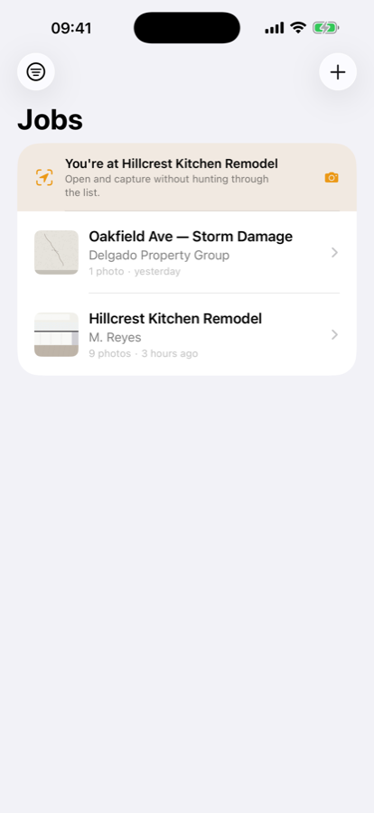
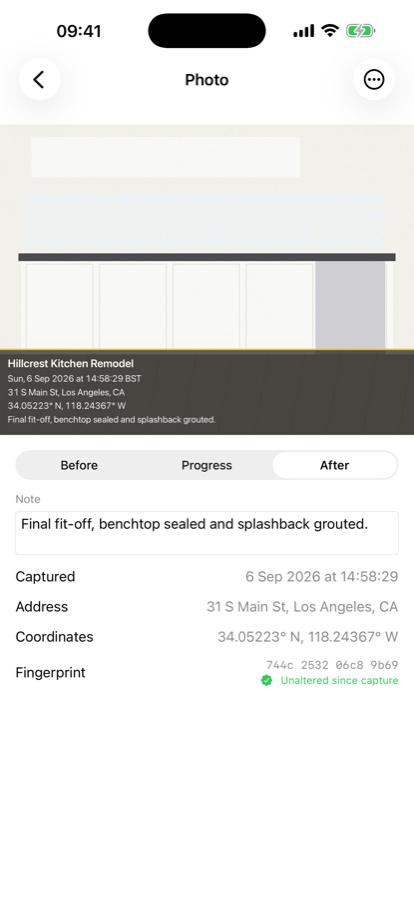
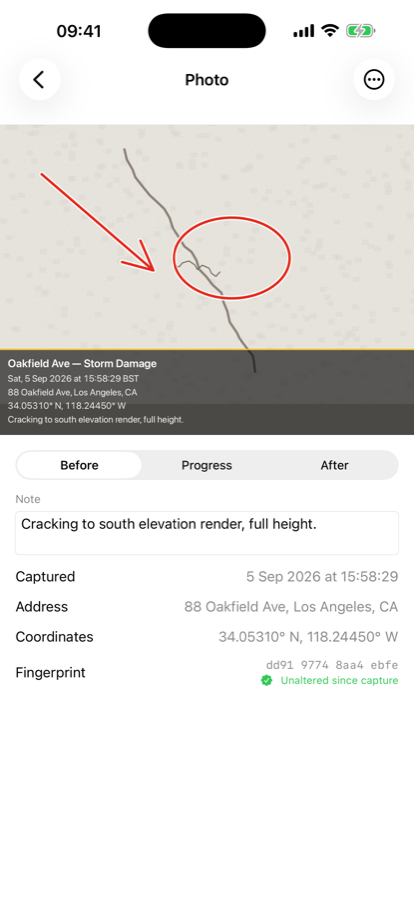

Proof, not just photos
Chalkline stamps every job-site photo with the time, the date, the address and the GPS coordinates as you take it — then turns the whole job into one PDF you can hand to a client, an adjuster or a lawyer.



What it does
Stamped as you shoot
Job name, date and time to the second, street address and coordinates burned into the photo. Nothing to fill in afterwards.
Before, progress, after
Tag each photo as you take it. The report groups itself into stages so a client sees the whole job at a glance.
Point at the problem
Draw arrows and circles onto a photo to show the crack, the leak, the damage.
Signed off on site
The client signs on your phone. The signature lands in the report with its own timestamp.
Tamper-evident
Each photo is fingerprinted with SHA-256 at capture. Change a pixel and the fingerprint changes, so you can show a photo hasn't been edited since it was taken.
Yours, on your letterhead
Add your logo, business name and license number once and they head every report you send.
Your data stays yours
Chalkline has no server and no account. Your photos and job records live on your device and sync through your own iCloud account. We never see them, and we collect nothing. Everything works offline — including generating reports.
Languages
English, Spanish, French, German, Portuguese, Italian, Dutch, Polish, Turkish, Russian, Japanese and Simplified Chinese.
Pricing
Free for up to three active jobs, with a small Chalkline line at the foot of exported reports. Archived jobs don't count toward the limit.
Chalkline Pro removes both, puts your branding on reports, and backs your jobs up across your devices. Monthly or yearly, with a one-week free trial. Prices are shown in the app before you subscribe.